자연생태복원기사(구) (2020-09-26 기출문제)
1과목: 환경생태학개론
1. 섬생물지리 이론에 관한 설명으로 옳지 않은 것은?
- 하나의 섬에서 종의 수와 조성은 역동적이다.
- 경관계획과 자연보전지구 지정에 유용한 이론이다.
- 섬이 클수록, 육지와 멀리 떨어질수록 종 수는 적다.
- 어떤 섬에서 생물종수는 이주와 사멸의 균형에 의해 결정된다.
(정답률: 81%)

2. 생물학적 오염(bioligical pollution)의 예로 옳은 것은?
- 질병에 감염된 생명체를 자연계로 방사한다.
- 생물의 사체에 의해 부영양화가 발생한다.
- 어획량을 늘리기 위해 팔당호에 베스를 방사했다.
- 먹이 사슬에 의해 수은이나 납 같은 중금속이 자연계 내 생물들의 체내에 축적된다.
(정답률: 53%)
3. 생태적 피라미드(ecological pyramid) 중 군집의 기능적 성질의 가장 좋은 전체도(全體圖)를 나타내며, 피라미드가 항상 정점이 위를 향한 똑바른 형태로서 생태학적으로 가장 큰 의의를 가진 것은?
- 개체수 피라미드
- 에너지 피라미드
- 개체군 피라미드
- 생체량 피라미드
(정답률: 52%)
4. 벌채, 산불 등으로 파괴된 산림과 같이 인위적인 교란에 의하여 파괴된 장소나 휴경지에서 시작되는 천이로 옳은 것은?
- 1차천이
- 2차천이
- 건성천이
- 습성천이
(정답률: 77%)
5. 질소고정 박테리아는 질소의 순환과정에 깊이 관여하고 있다. 다음 중 질소고정 박테리아로 널리 알려져 있는 것은?
- Rhizobium
- Nitrobacter
- Nitrosomomas
- Micrococcus
(정답률: 54%)
6. 생물이 필요로 하는 원소가 생물권 내에서 환경 → 생물 또는 생물 → 환경으로 일정한 경로를 거쳐 순환되는 과정을 무엇이라고 하는가?
- 천이
- 온실효과
- 먹이연쇄순환
- 생물지구화학적 순환
(정답률: 81%)
7. 다음의 설명에 해당되는 것은?
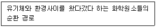
- 물질 순환
- 에너지 순환
- 생물종 순환
- 생물지화학적 순환
(정답률: 68%)
8. 생태계의 구성요소에서 생산자에 해당하지 않는 것은?
- 산림식물
- 초원식물
- 식물플랑크톤
- 유기영양 미생물
(정답률: 67%)
9. 다음 중 담수에서 생태학적으로 중요한 환경요인이 아닌 것은?
- 빛
- 온도
- 산소
- 염분농도
(정답률: 76%)
10. 국제자연보존연맹(IUCN)의 평가기준에서 보호대책이 없으면 가까운 장래에 멸종할 것으로 생각되는 것은?
- 절멸종
- 위기종
- 취약종
- 희귀종
(정답률: 73%)
11. 다음 보기가 설명하는 것은?
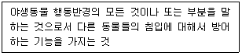
- 세력권
- 산란처
- 은신처
- 생태적 기위
(정답률: 73%)
12. 멸종위기에 처한 야생동식물을 보호하기 위한 국제협약은?
- CITES 협약
- 람사르 협약
- 생물종다양성 협약
- CISG 협약
(정답률: 70%)
13. 어떤 식물이 충분한 빛이 쪼이는 곳에서 생육할 때 보다 그늘에서 생육하는 경우에 토양 속의 아연 요구량이 적게 필요하다고 가정한다면, 이 내용에 적합한 법칙으로 옳은 것은?
- Allen의 법칙
- Bergmann의 법칙
- Liebig의 최소량 법칙
- Gause의 경쟁 배타 법칙
(정답률: 71%)
14. 생물종간의 상호관계 중 한 종이 다른 종에 도움을 주지만 도움을 받는 종은 상대편에아무런 작용도 하지 않는 관계를 의미하는 용어로 옳은 것은?
- 종간경쟁
- 편해공생
- 편리공생
- 상리공생
(정답률: 83%)
15. 내성(tolerance) 범위에 대한 설명으로 가장 거리가 먼 것은?
- 모든 요인에 대하여 넓은 내성범위를 갖는 생물은 분포구역이 좁다.
- 일반적으로 각 생물의 발생 초기에는 각 요인에 대한 내성범위가 좁다.
- 대부분의 생물이 자연계에서 최적 범위내의 생태적 요인 하에서 살고 있는 것은 아니다.
- 어떤 환경요인이 최적 범위에 있지 않을 때에는 다른 요인에 대해서도 내성이 약화된다.
(정답률: 73%)
16. 다음 보기가 설명하는 용어로 옳은 것은?
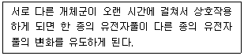
- 적응
- 공진화
- 생태적지위
- 제한요인
(정답률: 78%)
17. 다음 중 빈영양 호수에 비해 부영양 호수에서 나타나는 현상의 설명으로 옳지 않은 것은?
- 동물 생산량이 높다.
- 심수층의 산소는 풍부하다.
- 조류(Algae)가 고밀도로 성장한다.
- 수심이 얕고 투명도 깊이 또한 얕다.
(정답률: 50%)
18. 생물군집에서 생물종간의 상호관계 중 상리공생(mutualism)과 상조공생(synergism)의 차이점을 옳게 설명한 것은?
- 상리공생은 상조공생보다 진화된 공생의 형태이다.
- 상리공생, 상조공생 모두 편해작용에 상반되는 현상이다.
- 상조공생은 개체수가 증가할수록 높은 에너지 효율을 보인다.
- 상리공생은 두 집단 간에 의무적 관계가 성립하는 반면, 상조공생은 반드시 필요한 의무적인 관계는 아니다.
(정답률: 65%)
19. 환경요인에 대해서 특정 생물종의 생존가능 범위를 무엇이라고 하는가?
- 생물범위
- 내성범위
- 서식범위
- 비생물범위
(정답률: 59%)
20. 도시림의 기능이나 효용에 관한 설명으로 가장 거리가 먼 것은?
- 방충적 효용
- 방음적 효용
- 방화적 효용
- 심리적 효용
(정답률: 59%)
2과목: 환경계획학
21. 국토적 계획 및 이용에 관한 법률상 지구단위계획에 포함되지 않는 내용은?
- 환경관리계획 또는 경관계획
- 토지의 용도별 수요 및 공급에 관한 사항
- 건축물의 배치·형태·색체 또는 건축선에 관한 계획
- 용도지역이나 용도지구를 대통령령으로 정하는 범위에서 세분하거나 변경하는 사항
(정답률: 28%)
22. 환경계획의 영역적 분류에 해당하지 않는 것은?
- 오염관리계획
- 환경시설계획
- 환경개발계획
- 환경자원관리계획
(정답률: 44%)
23. 생태 네트워크의 필요성에 관한 설명으로 옳지 않은 것은?
- 생물다양성을 증진하기 위해서이다.
- 생물서식공간을 각각의 독립적인 공간으로 조성하기 위해서이다.
- 불필요한 생물서식공간의 조성으로 인한 경제적 손실비용을 최소화하기 위해서이다.
- 무절제한 개발로 인한 훼손된 환경을 개발과 보전이 조화를 이루면서 자연지역을 보전하기 위해서이다.
(정답률: 66%)
24. 오늘날 야기되는 대표적인 환경문제가 아닌 것은?
- 대기오염
- 자원고갈
- 지구온난화
- 이산화탄소 감소
(정답률: 83%)
25. 환경 친화적 택지개발에 관한 설명으로 옳지 않은 것은?
- 지구환경의 보전
- 인간과 자연 상호에게 유의함 제공
- 토지자원절약을 통한 효율성 제고
- 단지 개발 시 자연보존문제를 동시적으로 고려
(정답률: 65%)
26. 여러 가지 평가항목을 평가함에 있어 일정 특성의 크고 작음을 비교하여 크기의 순서에 따라 숫자를 부여한 척도는?
- 순서척(順序尺)
- 명목척(名目尺)
- 등간척(等間尺)
- 비례척(比例尺)
(정답률: 62%)
27. 국토의 계획 및 이용에 관한 법률상 도시지역내 공업지역의 건폐율과 용적률의 최대한도기준으로 옳게 나열한 것은?
- 건폐율 60% 이하 – 용적률 400% 이하
- 건폐율 70% 이하 – 용적률 400% 이하
- 건폐율 80% 이하 – 용적률 500% 이하
- 건폐율 90% 이하 – 용적률 500% 이하
(정답률: 61%)
28. 다음 중 하천의 주요기능으로 가장 거리가 먼 것은?
- 이수기능
- 위락기능
- 치수기능
- 환경기능
(정답률: 71%)
29. 다음 난개발과 지속가능개발의 특성에 관한 비교 중 평가기준의 내용이 옳지 않은 것은?
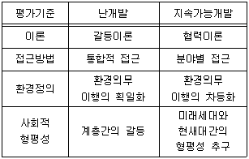
- 이론
- 접근방법
- 환경정의
- 사회적 형평성
(정답률: 65%)
30. 도시지역 기온의 상승결과로 나타나는 열섬(heat island)현상의 원인으로 볼 수 없는 것은?
- 각종 산업시설, 자동차 등에 의한 대기오염
- 교통량 증가, 냉난방, 조명 등에 의한 인공열
- 지표면의 인공포장으로 인한 녹지면적의 부족
- 넓은 도로 또는 오픈스페이스에 의한 원활하지 못한 통풍
(정답률: 75%)
31. 환경가치추정은 여러 가지 방법에 의해 계산되고 있다. 예를 들어 공기 좋은 곳의 부동산 값이 공기가 나쁜 곳의 부동산 값에 비해서 비싸다면 그에 대한 환경가치를 추정할 수 있는 가장 적절한 방법은?
- 여행비용에 의한 추정
- 속성가격에 의한 추정
- 경제시스템에 의한 추정
- 부동산 공시지가에 의한 추정
(정답률: 56%)
32. 다음 중 환경정책기본법상 환경친화적인 계획기법등을 작성할 경우 포함되어야 할 사항 중 틀린 것은? (단, 그 밖에 행정계획 및 개발사업이 지속가능하게 계획되어 수립·시행될 수 있게 하기 위하여 필요한 사항은 제외한다.)
- 환경친화성 지표에 관한 사항
- 환경친화적 계획 기준 및 기법에 관한 사항
- 국가환경 기준 및 외국의 환경기준에 관한 사항
- 환경친화적인 토지의 이용·관리 기준에 관한 사항
(정답률: 75%)
33. 다음 중 생태네트워크의 구성요소가 아닌 것은?
- 핵심지역
- 완충지역
- 경계지역
- 생태적 코리더
(정답률: 62%)
34. 생물 공동체의 서식처, 어떤 일정한 생물집단 및 입체적으로 다른 것들과 구분될 수 있는 생물집단의 공간영역으로 정위될 수 있는 환경계획의 공간 차원은?
- 산림
- 비오톱
- 생태공원
- 지역사회
(정답률: 81%)
35. 농업적으로 생산적인 생태계의 의도적인 설계와 유지관리를 위해 퍼머컬쳐(Perma-culture)가 가져야 하는 특성으로 옳지 않은 것은?
- 자연 생태계의 다양성
- 자연 생태계의 안정성
- 자연 생태계의 순환성
- 자연 생태계의 고립성
(정답률: 79%)
36. 생물다양성보전 및 이용에 관한 법률상 생태계서비스지불계약을 체결한 당사자가 그 계약 내용을 이행하지 아니하거나 계약을 해지하고자 하는 경우에 상대방에게 언제까지 이를 통보하여야 하는가?
- 1개월 이전
- 3개월 이전
- 6개월 이전
- 12개월 이전
(정답률: 60%)
37. 국토의 계획 및 이용에 관한 법률상 용어의 정의가 옳지 않은 것은?
- 공동구 : 지하매설물을 공동 수용함으로써 미관의 개선, 도로구조의 보전 및 교통의 원활한 소통을 위하여 지하에 설치하는 시설물
- 용도구역 : 개발로 인하여 기반시설이 부족할 것으로 예상되나 기반시설의 설치가 곤란한 지역을 대상으로 건폐율이나 용적률을 강화하여 적용하기 위하여 지정하는 구역
- 용도지구 : 토지의 이용 및 건축물의 용도·건폐율·용적률·높이 등에 대한 용도지역의 제한을 강화하거나 완화하여 적용함으로써 용도지역의 기능을 증진시키고 경관·안전 등을 도모하기 위하여 도시·군관리계획으로 결정하는 지역
- 기반시설부담구역 : 개발밀도관리구역 외의 지역으로서 개발로 인하여 기반시설의 설치가 필요한 지역을 대상으로 기반시설을 설치하거나 그에 필요한 용지를 확보하게 하기 위하여 관련 규정에 의해 지정·고시하는 구역
(정답률: 56%)
38. 생태적 복원의 유형 중 복원(restoration)에 관한 설명으로 옳은 것은?
- 교란 이전의 상태로 정확하게 돌아가기 위한 시도이다.
- 구조에 있어 간단할 수 있지만 보다 생산적일 수 있다.
- 현재의 상태를 개선하기 위해 다른 생태계로 대체하는 것이다.
- 이전 생태계와 유사한 기능을 지니면서도 다양한 구조의 생태계를 창출할 수 있다.
(정답률: 62%)
39. 백두대간 보호에 관한 법률상 지정·관리되는 백두대간보호지역의 구분으로 옳은 것은?
- 핵심구역
- 핵심구역, 전이구역
- 핵심구역, 완충구역
- 핵심구역, 완충구역, 전이구역
(정답률: 58%)
40. 자연환경보전법상 다음 보기가 정의하는 용어로 옳은 것은?
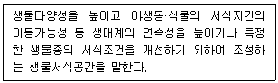
- 생태축
- 소생태계
- 소생물권
- 생태연결통로
(정답률: 38%)
3과목: 생태복원공학
41. 생태복원의 각 단계를 설명한 것으로 옳지 않은 것은?
- 목적설정이란 생태계와 인공계의 관계를 조정할 때 구체적인 수준을 정하는 것이다.
- 시공은 목표종의 서식에 적합한 공간을 만드는 것으로 종의 생활사를 고려하여야한다.
- 조사 및 분석에서 생태계는 지역마다 그 특징이 유사하므로 대표적인 지역에 대한 조사만 수행해도 된다.
- 계획은 생태계와 인공계의 관계를 공간적인 배치에 의해 조정함과 동시에 생태계의 질, 크기, 배치 등을 결정하는 것이다.
(정답률: 76%)
42. 수질정화 습지의 조성을 위한 고려사항으로 옳지 않은 것은?
- 수질정화를 극대화할 수 있는 충분한 습지가 확보되어야 한다.
- 수질정화가 왕성하게 일어나는 저습지대의 식생은 주로 부수식물로 구성되어야 한다.
- 간단한 취수시설로서 하천·호소의 물을 도입하는데 지리적으로 유리한 곳이어야 한다.
- 조성 후에는 식생관리가 필요하며, 정화기능을 극대화시키기 위하여 1년에 1회 이상 절취하는 작업을 해 주면 좋다.
(정답률: 55%)
43. 생태복원과 관련된 공사에서 순공사원가 계산에 포함되는 3가지 비목은 무엇인가?
- 재료비, 노무비, 이윤
- 재료비, 노무비, 경비
- 재료비, 일반관리비, 이윤
- 재료비, 일반관리비, 경비
(정답률: 70%)
44. 다음 보기와 같은 조건에서 관거 출구에서의 첨두 유출량(m3/s)은 약 얼마인가? (단, 합리식을 이용한다.)
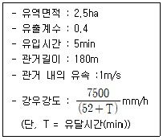
- 0.30
- 0.35
- 0.40
- 0.45
(정답률: 51%)
45. 산림식생복원을 위한 질소고정식물들로만 바르게 짝지어진 것은?
- 소나무, 싸리나무, 떡갈나무
- 소나무, 물오리나무, 서어나무
- 아까시나무, 작살나무, 떡갈나무
- 아까시나무, 자귀나무, 사방오리나무
(정답률: 66%)
46. 생태 네트워크의 시행방안에 대한 설명으로 옳지 않은 것은?
- 기존 수자원, 즉 호소, 하천, 실개천 등을 적극적으로 보전하고 최대한 계획에 활용한다.
- 공원 및 옥외공간의 녹화는 경관향상을 위한 녹화를 하며 평면구조의 생태적인 기법으로 녹화한다.
- 녹지체계는 생태통로, 녹도, 보행자 전용도로 등 선형의 생물이동통로를 조성하여 그린네트워크를 형성한다.
- 생물이 이동할 수 있도록 중앙의 핵심녹지를 중심으로 거점녹지(면녹지), 점녹지를 체계적으로 연결한다.
(정답률: 64%)
47. 토양 화학성을 나타내는 지표에 대한 설명으로 옳지 않은 것은?
- 양이온교환용량은 보비력 혹은 완충능력의 지표가 된다.
- 산림토양의 양이온교환용량은 일반적으로 경작토양보다 낮다.
- 토양입자의 표면은 음전하(-)로 되어있고, 양이온을 흡착하고 있다.
- 양이온교환용량이 큰 토양일수록 토양 pH 변동을 작게 하는 완충능력이 작다.
(정답률: 58%)
48. 비료의 성분 중 칼륨(K)의 특징으로 옳은 것은?
- 식물 세포핵의 구성요소로 되어 있고, 이것이 부족하면 뿌리의 발육이 나빠지며 지상부의 생장도 나빠지게 된다.
- 식물섬유의 주성분으로 줄기와 잎의 생육에 큰 효과가 있으며, 이것의 양이 부족할 경우 지엽의 생육이 빈약해지고, 잎의 색깔이 담황색을 나타나게 된다.
- 탄수화물의 합성과 동화생산물의 이동에 관여하여 동화작용을 촉진하고, 줄기와 잎을 강하게 하며, 병충해에 대한 저항성을 크게 한다.
- 식물의 직접적인 영양소로서 중요할 뿐만 아니라 산성의 중화, 토양구조의 개선, 토양유기물의 분해와 비효의 증진 등과 같은 간접적인 효과도 크다.
(정답률: 48%)
49. 점차 자연성을 잃어가고 황폐화되어 가는 도시지역에서 비오톱이 갖는 기능으로 볼 수 없는 것은?
- 어린이를 위한 공식적 놀이 공간
- 도시의 환경변화 및 오염의 지표
- 도시 생물종의 은신처, 분산 및 이동통로
- 도시민의 휴식 및 레크리에이션을 위한 공간
(정답률: 57%)
50. 축척1/5000인 지도상에 표시된 상하 등고선의 수직거리가 100m, 그 구간의 측정된 수평거리가 10cm인 부분의 경사도(%)는?
- 10
- 20
- 30
- 40
(정답률: 58%)
51. 습지 복원 시 고려되어야 할 요소와 가장 거리가 먼 것은?
- 기능(function)
- 구성(composition)
- 균질성(homogeneity)
- 역동성과 회복력(dynamics andresilience)
(정답률: 66%)
52. 녹음만족도가 80%일 때 종다양도는? (단, P = 0.18 + 0.46H′, r = 0.942, p ＜ 0.⑤ 이다.)
- 0.50
- 0.55
- 1.30
- 1.35
(정답률: 21%)
53. 토양생성인자들에 대한 설명으로 옳지 않은 것은?
- 습윤지대에서는 토층분화가 쉽게 일어나고 산성토양이 발달되기 쉽다.
- 침엽수는 염기함량이 낮기 때문에 침엽수림하에서 생성된 토양은 활엽수림에 비하여 알칼리성으로 된다.
- 식생의 종류에 따라 토양에 공급되는 유기물의 양이 다르며, 토양의 침식 방지에 기여하는 정도가 다르다.
- 토양의 단면특성을 결정하는 기본적인 인자인 동시에 토양생성에 대한 기후인자의 특성을 촉진시키거나 지연시키는 역할을 하는 것은 모재인자라고 한다.
(정답률: 56%)
54. 비오톱 보호 및 조성을 위한 원칙으로 옳지 않은 것은?
- 보전할 생물의 계속적 생존을 위하여 이에 상응하는 수질의 용수를 확보하도록 한다.
- 조성대상지 본래의 자연환경을 복원하고 보전하기 위하여 자연환경의 파악은 필수 조건이다.
- 비오톱 조성의 설계 시 이용되는 비생물적인 소재는 생태계 보호를 위해 외부에서 도입하도록 한다.
- 설계도면에 따라 조성한 비오톱은 완성과정에 있으므로 완성상태가 되기 위한 계획이 설계에 포함되어야 한다.
(정답률: 77%)
55. 대체습지의 접근 방법 중 미티게이션 뱅킹(Mitigation Banking)의 특징에 대한 설명으로 옳지 않은 것은?
- 작은 파편화된 습지를 하나의 통합된 습지로 관리할 수 있다.
- 다른 유형의 보상습지의 조성은 훼손될 습지와 동일한 면적이어야 한다.
- 규제 부서의 허가를 위한 검토와 모니터링 결과에 대한 노력 비용을 절감시킬 수 있다.
- 개발사업이 이루어지기 이전에 훼손될 습지에 대한 영향을 고려하여 미리 습지를 만들고, 향후에 개발사업이 진행될 때 미리 만들어진 습지만큼을 훼손할 수 있도록 하는 정책을 말한다.
(정답률: 50%)
56. 생태축의 역할 및 기능 중 생태적 기능에 해당하지 않는 것은?
- 생물 이동성 증진
- 도시 내 생태계의 균형유지
- 대기오염 및 소음 저감 기능
- 생물의 다양성 유지 및 증대
(정답률: 69%)
57. 횡단부위가 넓고, 절토지역 또는 장애물 등에 의해 동물을 위한 통로조성이 어려운 곳에 설치하는 생태통로는?
- 선형 통로
- 지하형 통로
- 육교형 통로
- 터널형 통로
(정답률: 65%)
58. 서식지의 분절화에 대한 설명으로 옳지 않은 것은?
- 면적효과란 서식지의 면적이 클수록 종수나 개체수가 적어지는 것을 말한다.
- 장벽효과의 정도는 동물의 이동공간과 이동능력에 따라 달라진다.
- 가장자리효과란 안정된 내부환경을 좋아하는 종이 서식하기 어려워지는 현상을 말한다.
- 거리효과란 서식지 상호 간의 거리가 작을수록 생물의 왕래가 용이하게 되는 것을 말한다.
(정답률: 61%)
59. 비탈면 녹화에 적합한 식물의 특성으로 옳지 않은 것은?
- 일년생 식물
- 지하부가 잘 발달하는 식물
- 발아가 빠르고 생육이 왕성하며 강건한 식물
- 건조에 강하고 척박지에서도 잘 자라는 식물
(정답률: 76%)
60. 생태계 복원의 성공여부를 확인하기 위한 과정인 모니터링에 대한 설명으로 옳지 않은 것은?
- 모니터링은 복원목적에 따라 달라지나 모니터링 항목은 동일하게 적용하는 것이 일반적이다.
- 모니터링은 지표종을 활용하기도 하며 이때에는 환경변화에 매우 민감한 종을 대상으로 한다.
- 생물의 모니터링은 활동 및 생활사가 계절에 따라 달라지므로 계절에 따른 조사가 중요하다.
- 모니터링은 기초조사, 선택된 항목의 주기적인 모니터링, 그리고 복원 주체와 학문 견구기관과의 유기적인 협조관계가 포함되어야 한다.
(정답률: 62%)
4과목: 경관생태학
61. 일반적으로 지형이 생태계의 패턴과 과정에 미치는 영향에 대한 설명 중 옳지 않은 것은?
- 지형은 산불, 바람 같은 자연교란의 빈도와 공간적 분포에 영향을 미친다.
- 지형은 경관 내의 많은 생물, 번식, 각종 물질 양의 흐름에 영향을 미친다.
- 경관을 이루는 부분들은 산사태나 하천수로 변화에 영향을 받는 정도가 같다.
- 지형에서 해발고도, 비탈면 방향, 모암, 경사도 등은 한 경관 내 여러 물질 분포의 양에 영향을 미친다.
(정답률: 70%)
62. 다음 중 옥상녹화 조성의 효과와 가장 거리가 먼 것은?
- 녹음효과
- 건강증진
- 환경교육의 장
- 동식물의 서식지 제공
(정답률: 57%)
63. 비오톱의 개념은 시대에 따라서 조금씩 변화해 가는 추세에 있다. 다음 중 비오톱의 개념을 결정하는 특성이 아닌 것은?
- 서식환경의 질적 특성
- 서식환경의 입지적 특성
- 생물서식지의 분포지로서 위치적 특성
- 유사 학문적 관점에 착안하여 사용하는 특성
(정답률: 76%)
64. 해양의 유형에 따른 경관생태에 대한 설명으로 옳은 것은?
- 암반해안은 해수면의 온도에 따라 대상분포를 나타낸다.
- 펄갯벌은 모래질이 20% 이하에 불과하며 갑각류나 조개류가 많이 서식한다.
- 모래갯벌은 해수의 흐름이 빠른 수로주변이나 바람이 강한 지역의 해변에 나타나는데 보통 폭이 넓은 편이다.
- 자갈해안은 갯벌해안이나 모래사장에 서식하는 생물에 비해 매우 한정된 종들이 낮은 밀도로 서식한다.
(정답률: 53%)
65. 도시경관생태의 특성에 대한 설명으로 옳지 않은 것은?
- 도시의 특징 중 하나는 도시 열섬현상이다.
- 도시화로 인한 토지이용 변화에 의해 도시지역은 교외 지역에 비해 뚜렷한 기온의 차를 나타낸다.
- 목본에서 성장하는 지의류와 선태류가 줄어드는 것은 대기오염 외에도 도시가 도시 외곽에 비해 습도가 낮기 때문이다.
- 다양한 도시구조와 토지이용패턴에 의한 도시서식공간의 이질성은 특별한 생태적 지위를 창출하기 때문에 도시에서 생물종의 수가 극도로 제한된다.
(정답률: 36%)
66. 경관생태학의 개념에 대한 설명으로 옳지 않은 것은?
- 지역 내 공간 요소들이 경관이다.
- 지역을 다루는 생태학을 지역생태학이라 한다.
- 생태학은 경관과 지역의 상호작용을 연구하는 학문이다.
- 경관생태학이란 인접한 생태계의 상호작용을 연구하는 학문이다.
(정답률: 47%)
67. 다음 보기의 설명 중 이것에 해당하는 것은?
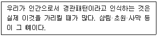
- 자연적 교란 양상
- 우점식생의 공간적 분포
- 생물의 상호작용의 결과
- 비생물적 환경의 변화 양상
(정답률: 57%)
68. 하천코리더(riparian corridor)의 상류와 하류에 대한 설명으로 가장 거리가 먼 것은?
- 상류의 수온은 높고 하류는 낮다.
- 상류는 급한 경사와 빠른 유속을 갖는다.
- 상류에는 높은 용존산소를 요구하는 어류가 서식한다.
- 하류로 갈수록 하천의 폭이 넓어지고 용존산소가 낮아진다.
(정답률: 74%)
69. 산림의 생태천이에 대한 설명으로 옳지 않은 것은?
- 1차천이는 습성천이, 건성천이, 중성천이 등으로 구분되며 자발적 천이의 성격을 가진다.
- 생태천이 후기에는 개체수를 늘리는 r전략보다는 개체수를 제한하는 K전략을 갖는다.
- 일반적으로 산림의 극상과 다르게 특정한 환경조건에서는 양수 또는 중간내음성 수종에의해 산림경관이 유지된다.
- 생태천이 진행 초기에는 광합성량/생체량의 비율이 낮지만 후기에는 안정화되면서 광합성량/생체량 비율이 높아진다.
(정답률: 55%)
70. 비오톱의 지도화의 방법에 대한 설명으로 옳은 것은?
- 선택적 지도화는 보호할 가치가 높은 특별지역에 한해서 조사하는 방법이다.
- 대표적 지도화는 전체 조사지역에 대한 생태학적 특성을 조사하는 방법이다.
- 포괄적 지도화는 대표성 있는 비오톱 유형을 조사하여 유사 비오톱 유형에 적용하는 방법이다.
- 포괄적-대표적 지도화는 블록 단위별로 특징이 있는 비오톱 유형을 중심으로 조사하는 방법이다.
(정답률: 49%)
71. 다음 보기가 설명하는 것은?
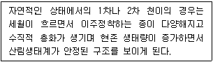
- 천이계열
- 진행적 천이
- 퇴행적 천이
- 생태적 수렴
(정답률: 61%)
72. 원격탐사의 특징으로 옳지 않은 것은?
- 광역성
- 전자파 이용
- 주기적 정보획득
- 자료의 저장과 분석의 어려움
(정답률: 77%)
73. 다음 중 알베도(Albedo)의 정의로 옳은 것은?
- 생태계를 통해 손실되는 에너지의 양
- 토양을 통해 유입되는 에너지의 총량
- 생산성에서 소비되는 양을 제한 순 에너지
- 경관요소로 들어오는 태양에너지에 대해 반사되는 에너지의 비
(정답률: 59%)
74. 환경부 생태자연도 조사 지침에 따른 습지평가항목에 포함되지 않는 것은?
- 수질정화
- 국가적 대표성
- 특정식물서식지
- 보호야생동물 번식지
(정답률: 30%)
75. 다음 중 도로 건설로 발생할 수 있는 문제점으로 옳지 않은 것은?
- 접근성 증대
- 녹지의 파편화
- 비탈면 대형화
- 서식처의 파편화
(정답률: 74%)
76. 토지개발에 따란 경관변화에 형태와 관계가 먼 것은?
- 마멸
- 확대
- 분할
- 천공화
(정답률: 64%)
77. 경관조각의 형태적 특성을 결정짓는 요소로 볼 수 없는 것은?
- 신장성
- 굴곡성
- 내부면적
- 개체군의 크기
(정답률: 46%)
78. 파편화에 의한 멸종 가능성이 높은 종으로 옳지 않은 것은?
- 개체군의 크기가 큰 종
- 개체군의 밀도가 낮은 종
- 넓은 행동권을 요구하는 종
- 특이한 생태적 지위를 요구하는 종
(정답률: 51%)
79. 생태통로의 설치에 관한 설명으로 옳은 것은?
- 해안 구조물에서 빈번하게 설치
- 서식지 면적의 확대가 가능한 곳에 설치
- 서식지 사이의 연결성을 높이기 위해 설치
- 생물다양성을 높이고 번식률을 낮추기 위해 설치
(정답률: 77%)
80. 다음 중 코리더(corridor)의 기능이 아닌 것은?
- 여과 기능
- 서식처 기능
- 종수요처 기능
- 종의 유전자 공급 기능
(정답률: 48%)
5과목: 자연환경관계법규
81. 백두대간 보호에 관한 법률상 산림청장은 백두대간보호 기본계획을 몇 년 마다 수립하여야 하는가?
- 1년
- 3년
- 5년
- 10년
(정답률: 59%)
82. 독도 등 도서지역의 생테계보전에 관한 특별법규상 특정도서에서의 행위허가 신청서 작성 시 첨부서류 목록으로 옳지 않은 것은?
- 당해 지역의 주민 의견을 수렴한 동의서
- 당해지역의 토지 또는 해역이용계획 등을 기재한 서류
- 행위 대상지역의 범위 및 면적을 표시한 축척 2만 5천분의 1 이상의 도면
- 당해행위로 인하여 자연환경에 미치는 영향예측 및 방지대책을 기재한 서류
(정답률: 63%)
83. 자연환경보전법상 사용되는 용어와 그 정의의 연결이 옳지 않은 것은?
- 자연환경 – 지하·지표(해양을 제외한다) 및 지상의 모든 생물과 이들을 둘러싸고 있는 비생물적인 것을 포함한 자연의 상태(생태계 및 자연경관을 포함한다)를 말한다.
- 자연환경의 지속가능한 이용 – 자연환경을 체계적으로 보존·보호 또는 복원하고 생물다양성을 높이기 위하여 자연을 조성하고 관리하는 것을 말한다.
- 자연생태 – 자연의 상태에서 이루어진 지리적 또는 지질적 환경과 그 조건 아래에서 생물이 생활하고 있는 모든 현상을 말한다.
- 생물다양성 – 육상생태계 및 수상생태계(해양생태계를 제외한다)와 이들의 복합생태계를 포함하는 모든 원천에서 발생한 생물체의 다양성을 말하며, 종내·종간 및 생태계의 다양성을 포함한다.
(정답률: 55%)
84. 국토의 계획 및 이용에 관한 법률상 중앙 및 지방도시계획위원회의 심의를 거치지 않고 1회에 한하여 2년 이내의 기간 동안 개발행위허가의 제한을 연장할 수 있는 지역은?
- 지구단위계획구역으로 지정된 지역
- 녹지지역으로 수목이 집단적으로 자라고 있는 지역
- 계획관리지역으로 조수류 등이 집단적으로 서식하고 있는 지역
- 개발행위로 인하여 주변의 환경, 경관, 미관 등이 오염되거나 손상될 우려가 있는 지역
(정답률: 36%)
85. 야생동물 보호 및 관리에 관한 법규상 유해야생동물과 가장 거리가 먼 것은?
- 분묘를 훼손하는 멧돼지
- 전주 등 전력시설에 피해를 주는 까치
- 장기간에 걸쳐 무리를 지어 농작물 또는 과수에 피해를 주는 참새, 어치 등
- 비행장 주변에 출현하여 항공기 또는 특수건조물에 피해를 주는 조수류(멸종위기 야생동물 포함)
(정답률: 65%)
86. 환경정책기본법령상 아황산가스(SO2)의 대기환경기준으로 옳은 것은? (단, 24시간 평균치이다.)
- 0.02ppm 이하
- 0.03ppm 이하
- 0.⑤ppm 이하
- 0.06ppm 이하
(정답률: 39%)
87. 생물다양성 보전 및 이용에 관한 법률상 생태계교란 생물이 아닌 것은?
- 떡붕어
- 황소개구리
- 단풍잎돼지풀
- 서양등골나물
(정답률: 67%)
88. 습지보전법상 “연안습지” 용어의 정의로 옳은 것은?
- 습지수면으로부터 수심 10m 까지의 지역을 말한다.
- 광합성이 가능한 수심(조류의 번식에 한한다.)까지의 지역을 말한다.
- 만조 때 수위선과 지면의 경계선으로부터 간조 때 수위선과 지면의 경계선까지의 지역을 말한다.
- 지후수위가 높고 다습한 곳으로서 간조 시에 수위선과 지면이 접하는 경계면 내에서 광합성이 가능한 수심지역까지를 말한다.
(정답률: 68%)
89. 국토의 계획 및 이용에 관한 법령상 용도지구 중 보호지구를 세분화한 것에 해당하지 않은 것은?
- 생태계보호지구
- 주거시설보호지구
- 중요시설물보호지구
- 역사문화환경보호지구
(정답률: 39%)
90. 국토의 계획 및 이용에 관한 법령상 기반시설 중 광장에 해당하지 않는 것은?
- 교통광장
- 일반광장
- 특수광장
- 건축물부설광장
(정답률: 41%)
91. 자연공원법상 공원구역에서 공원사업 외에 공원관리청의 허가를 받아야 하는 경우와 가장 거리가 먼 것은? (단, 대통령령으로 정하는 경미한 행위는 제외한다.)
- 자갈을 채취하는 행위
- 물건을 쌓아 두거나 묶어 두는 행위
- 100명의 사람이 단체로 등산하는 행위
- 나무를 베거나 야생식물을 채취하는 행위
(정답률: 64%)
92. 자연환경보전법상 생태·자연도의 작성·활용기준 중 ( ) 안에 알맞은 것은?
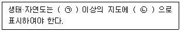
- ㉠ 2만5천분의 1, ㉡ 점선
- ㉠ 2만5천분의 1, ㉡ 실선
- ㉠ 5만분의 1, ㉡ 점선
- ㉠ 5만분의 1, ㉡ 실선
(정답률: 64%)
93. 환경정책기본법령상 수질 및 수생태계 상태별 생물학적 특성 중 생물지표종(저서생물)의 생물등급이 다른 하나는?
- 가재
- 옆새우
- 꽃등에
- 민하루살이
(정답률: 56%)
94. 생물다양성 보전 및 이용에 관한 법률상 환경부장관이 반출승인대상 생물자원에 대하여 국외반출을 승인하지 않을 수 있는 경우로 틀린 것은?
- 극히 제한적으로 서식하는 경우
- 경제적 가치가 낮은 형태적·유전적 특징을 가지는 경우
- 국외에 반출될 경우 그 종의 생존에 위협을 줄 우려가 있는 경우
- 국외로 반출될 경우 국가 이익에 큰 손해를 입힐 것으로 우려되는 경우
(정답률: 70%)
95. 자연공원법규상 공원관리청이 규정에 의해 징수하는 점용료 등의 기준요율에 관한 사항 중 ( ) 안에 알맞은 것은? (단, 다른 법령에 특별히 정한 기준은 제외한다.)
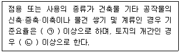
- ㉠ 인근 토지 임대료 추정액의 100분의 25
㉡ 수확예상액의 100분의 10 - ㉠ 인근 토지 임대료 추정액의 100분의 25
㉡ 수확예상액의 100분의 25 - ㉠ 인근 토지 임대료 추정액의 100분의 50
㉡ 수확예상액의 100분의 10 - ㉠ 인근 토지 임대료 추정액의 100분의 50
㉡ 수확예상액의 100분의 25
(정답률: 52%)
96. 야생생물 보호 및 관리에 관한 법규상 시장·군수·구청장은 박제업자에게 야생동물의 보호·번식을 위하여 박제품의 신고 등 필요한 명령을 할 수 있는데, 박제업자가 이에 따른 신고 등 필요한 명령을 위반한 경우 각 위반차수별 (개별)행정처분기준으로 가장 적합한 것은?
- 1차 : 경고, 2차 : 경고,
3차 : 영업정지 3개월, 4차 : 등록취소 - 1차 : 경고, 2차 : 영업정지 1개월,
3차 : 영업정지 3개월, 4차 : 등록취소 - 1차 : 영업정지 1개월, 2차 : 영업정지 3개월,
3차 : 영업정지 6개월, 4차 : 사업장 이전 - 1차 : 영업정지 1개월, 2차 : 영업정지 3개월,
3차 : 영업정지 6개월, 4차 : 등록취소
(정답률: 63%)
97. 환경정책기본법령상 하천에서의 다클로로메탄의 수질 및 수생태계 기준(mg/L)으로 옳은 것은? (단, 사람의 건강보호 기준으로 한다.)
- 0.008 이하
- 0.01 이하
- 0.02 이하
- 0.⑤ 이하
(정답률: 37%)
98. 습지보전법상 습지보전을 위해 설치할 수 있는 시설과 가장 거리가 먼 것은?
- 습지를 연구하기 위한 시설
- 습지를 준설 및 복원하기 위한 시설
- 습지오염을 방지하기 위한 시설
- 습지상태를 관찰하기 위한 시설
(정답률: 58%)
99. 다음은 국토기본법령상 국토계획평가의 절차이다. ( ) 안에 얼맞은 것은?
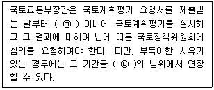
- ㉠ 15일, ㉡ 10일
- ㉠ 15일, ㉡ 15일
- ㉠ 30일, ㉡ 10일
- ㉠ 30일, ㉡ 15일
(정답률: 43%)
100. 다음 중 자연환경보전법상 다음 보기가 설명하는 지역으로 옳은 것은?
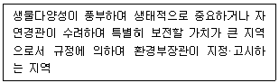
- 자연유보지역
- 자연경관보호지역
- 생태·경관보전지역
- 생태계변화관찰지역
(정답률: 63%)